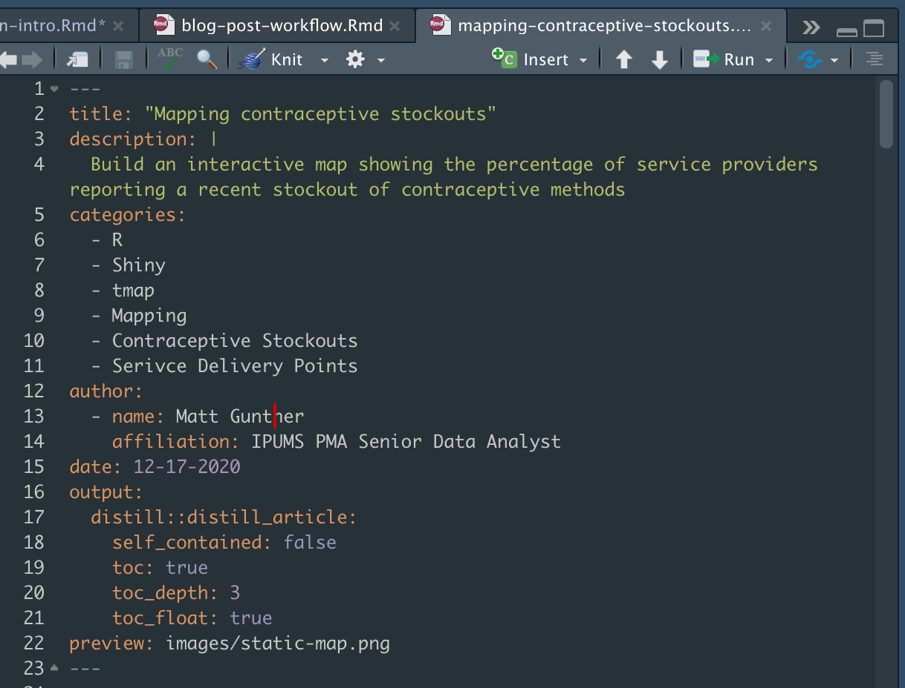
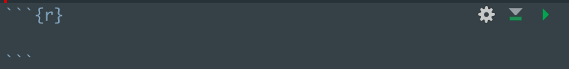

RMarkdown documents (.Rmd) work just like regular R scripts (.R) in that you can use them as a space to develop code before sending it to the R Console. The main difference is that an RMarkdown file breaks code into discrete “chunks” of code that can be separated by blocks of text. When you run an RMarkdown document, the Console ignores anything that’s not included in a code chunk (so there’s no need to use the comment indicator #).
RMarkdown is a powerful tool for sharing and teaching R code, but it has become even more useful with the advent of packages like knitr, which can transform RMarkdown files into Word documents, PDFs, sideshows, HTML pages, and more. The PMA Data Hub is built with knitr and another package called distill, which transforms RMarkdown files into fully formatted blog posts.
If you’ve never used RMarkdown, knitr, or distill before, you’ll need to install them with your R Console now:
install.packages("RMarkdown")
install.packages("knitr")
install.packages("distill")
Creating a blog post
In this post, we’ll assume that you’ve already reviewed the Blog Post Workflow, so you’re familiar with the process for creating a new blog post on a new branch of the Git repository.
Assuming you’ve created a new branch for your post, you’ll create and open an RMarkdown file when you run:
distill::create_post("Getting started with RMarkdown")
At this point, RStudio should look something like this:

An RMarkdown file opens with a template showing a YAML metadata header, a code chunk called “setup”, and some boilerplate text.
YAML Metadata
Your RMarkdown template contains a header consisting of a series of key: "value" pairs written in YAML. This is where we store metadata for each article appearing both at 1) the top of every blog post, and 2) on the blog homepage.
Here’s an example of a complete YAML header for a post on the Data Hub:

Title
This will be the main Title shown in CSS style H1 at the top of your post. We automatically reformat to all-caps, so this is not case-sensitive.
Please do not use sentence punctuation (unless your title is a question).
Ensure that your Title matches the “H1 Title” on the Data Hub Tracking Sheet.
Description
This is the subtitle shown in CSS style H2 (just below the H1 Title). This subtitle is case-senstive.
Please do not use sentence punctuation (unless your subtitle is a question).
Try your best to avoid repeating the subtitle pattern “How to X”. Subtitles should emphasize the importance of a post in the particular context of analyzing PMA data if possible.
Categories
The are the “tags” that will help readers filter posts and navigate through different thematic modules. What tags should you include?
- Module name (Column A of the tracking sheet)
- Post type (Column B of the tracking sheet)
- Important package functions (
package::function) or techniques - Analysis tools
Always check to see if your tags have been used in a previous post and, if so, make sure to match their existing style, spelling, etc.
Author
Always include your name and your affiliation with the project. Optionally, feel free to link to a personal website or social media account!
Examples:
author:
- first_name: "Yihui"
last_name: "Xie"
url: https://github.com/yihui
affiliation: RStudio
affiliation_url: https://www.rstudio.com
orcid_id: 0000-0003-0645-5666
- name: "JJ Allaire"
url: https://github.com/jjallaire
affiliation: RStudio
affiliation_url: https://www.rstudio.com
- name: "Rich Iannone"
url: https://github.com/rich-iannone
affiliation: RStudio
affiliation_url: https://www.rstudio.comDate
Admin will update this to reflect date of publication.
Output (Table of Contents)
The PMA Data Hub uses a floating table of contents that follows up to 3 heading depths. Please format exactly as shown:
output:
distill::distill_article:
self_contained: false
toc: true
toc_depth: 3
toc_float: true
Preview
This is the image that will appear alongside your post in the blog homepage. If you don’t specify an image, distill will automatically select the first image in your post; if there are no images, the space will be left blank (but please consider using one!)
The file path to your image should be relative to the RMarkdown file, itself. For example:

This shows the folder “2020-12-09-mapping-contraceptive-stockouts” in the "_posts" folder. The .Rmd file lives in the top level of the folder, and the desired image Rlogo.png lives in the images subfolder. The correct way to reference the image is:
preview: images/static-map.png
Code chunks
Each chunk of code in your RMarkdown file must be offset as shown here (note the tic-marks and “r” in curly brackets):

You can quickly insert a code chunk via the Code menu in RStudio’s menu bar, or by using the keyboard shortcut shown there (e.g. command + option + I for mac users).
Chunk options
You can set specific rendering instructions for RMarkdown inside the curly brackets. Some common options include:
A full list of chunk options are explained here.
You can also set default options for all of your code chunks at the top of your RMarkdown document (see the setup chunk that opens in a new template):
knitr::opts_chunk$set(
echo = TRUE,
eval = FALSE,
error = FALSE,
message = FALSE,
warning = FALSE
)
Data Visualizations from chunks
The Distill website explains how to format figures, tables, and diagrams via code chunk arguments.
Formatted Text
Here, we’ll show some examples for adding formatted text to the body of your RMarkdown file (i.e. everything that not included in the YAML header or a code chunk).
Headings
Use the # symbol once for an H1 heading, twice ## for an H2 heading, or three times ### for an H3 heading.
Look at the table of contents for this page: H1 headings are left aligned, and H2 headings are indented once; any H3 headings would be indented twice if we had them.
Bold and Italics
Italics are offset by one * like this:
Bold text is offset by two ** like this:
Inline code (variable names, packages, functions, etc)
We use a particular font for code chunks, and this font also gets applied in the text body to any mention of a variable name, package, or function - basically anything that might appear in the console.
Note: the first time you use a variable name, package, or function in a post, it’s usually best in include a hyperlink to the underlying documentation. When you insert a hyperlink, do not offset text for inline code.
Inline code is offset by one ` like this:
Hyperlinks
A hyperlink should be used the first time you mention a variable, package, function, or anything else that has underlying documentation at an external source.
A hyperlink can be inserted like this:
A [hyperlink](http://bitly.com/98K8eH) can be inserted like this:If you want to link to another page on the PMA Data Hub, use relative links (do not include the full path). For example:
A relative path to the ABOUT page:
A relative path to the [ABOUT](about.html) page:Or, a relative path to one of the blog posts:
Or, a relative path to one of the [blog posts](posts/2020-12-09-mapping-contraceptive-stockouts/index.html)Here is a relative path to one of the headings on that blog post:
Here is a relative path to one of the [headings](posts/2020-12-09-mapping-contraceptive-stockouts/index.html#shiny-application) on that blog postAsides and Footnotes
Asides are designed for very brief comments rendered to the side of the text body. They must be offset with <aside> tags like this:
<aside>
FYI: formatted text in an "aside" must use <b>HTML tags</b>
</aside>Asides are associated with a particular paragraph or code chunk, so they will create white-space in the text body if they become longer than their partner! For longer comments, consider using a footnote.1
Insert a footnote here^[This is my footnote]Footnotes appear as hover-text, and they also populate at the bottom of the page.↩︎